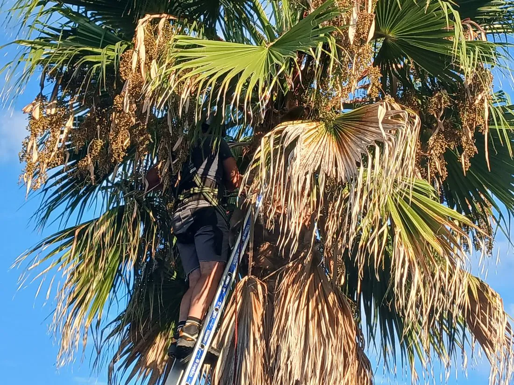
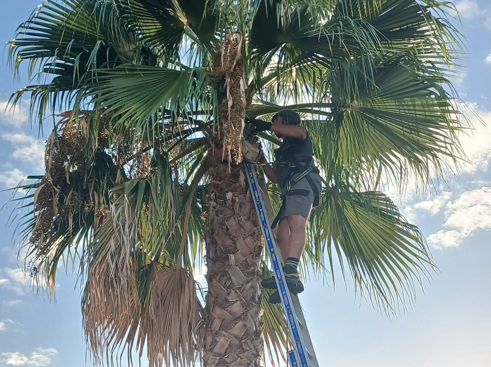
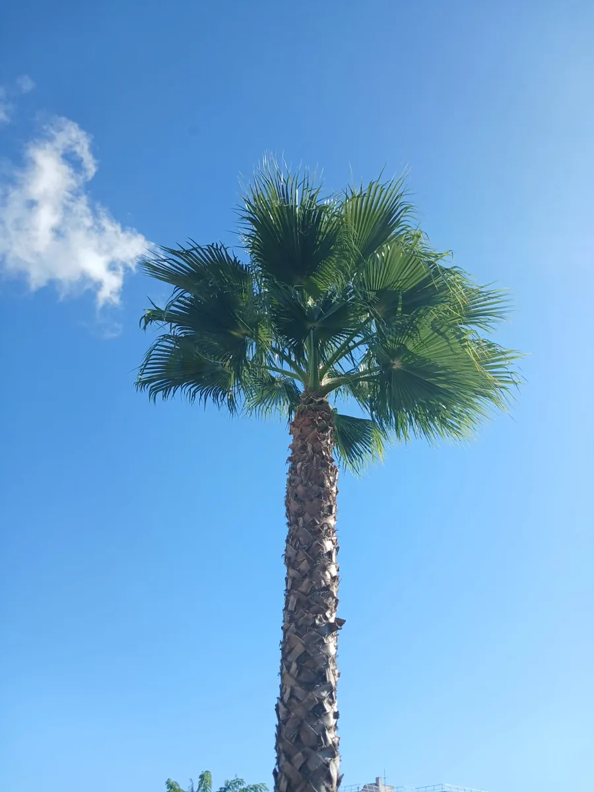

Trois palmiers dégagés de leurs palmes sèches
Les palmes mortes s'accumulaient sous les couronnes et formaient un manchon brun sur toute la hauteur des stipes. L'intervention a rendu aux trois sujets leur silhouette, et le terrain a été laissé net.

Ce qui a été fait
- Commune, Le Bouscat, en Gironde
- Période, août 2026
- Trois palmiers de jardin
- Motif, des palmes sèches accumulées sous les couronnes
- Accès dégagé, aucune contrainte particulière sur ce chantier
- Palmes coupées puis emportées, rien laissé sur place
- Hauteur des sujets, six mètres environ
- Durée du chantier, deux heures pour les trois palmiers
- Variété [[À CONFIRMER : variété de palmier, à ne pas deviner d'après la photo]]
Une palme sèche ne tombe pas toute seule
Une palme qui meurt ne se détache pas du stipe. Elle se replie contre le tronc et y reste accrochée, parfois plusieurs années. Les palmes s'empilent alors les unes sur les autres et forment ce manchon brun que l'on voit sur les sujets non entretenus.
Sur ces trois sujets de six mètres, le manchon courait sur presque toute la hauteur. Ce manchon pose trois problèmes. Il pèse lourd et finit par se décrocher par plaques, souvent par grand vent. Il retient l'humidité contre le stipe. Il offre enfin un abri commode aux rongeurs et aux guêpes, à hauteur de jardin.
La coupe se fait au ras de la base de la palme, sans entamer le stipe. Les cicatrices restantes composent le dessin en losanges visible sur les troncs après l'intervention. Les palmes encore vertes sont conservées, elles nourrissent l'arbre.


Une couronne rendue à sa forme
Les palmes vertes seules subsistent, ouvertes en éventail. Le stipe est visible sur toute sa hauteur. Les palmes coupées ont quitté le jardin le jour même.

Ce que l'on nous demande sur les palmiers
Non. Les palmes vertes alimentent le palmier, les retirer l'affaiblit. Seules les palmes sèches et celles qui retombent sous l'horizontale sont coupées. Un palmier taillé trop court met plusieurs saisons à reconstituer sa couronne.
Un passage par an suffit à la plupart des sujets de jardin. Il évite que les palmes sèches ne s'accumulent en manchon, ce qui rend chaque intervention suivante plus longue et plus coûteuse.
Sur ce chantier, elles ont été chargées et emportées le jour même. Les palmes sèches sont fibreuses et encombrantes, elles se broient mal et se prêtent peu au paillage sur place.